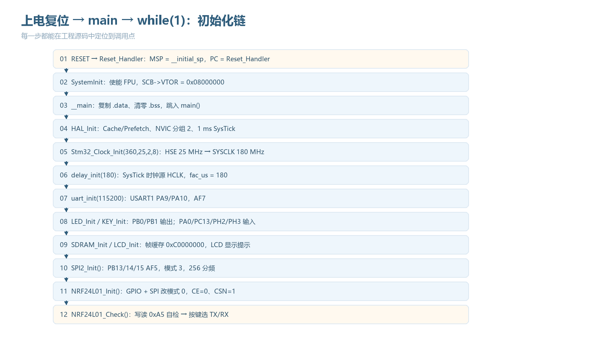
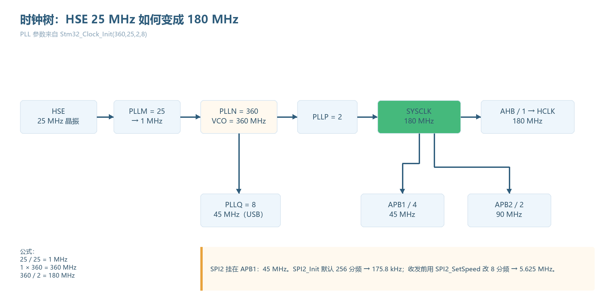
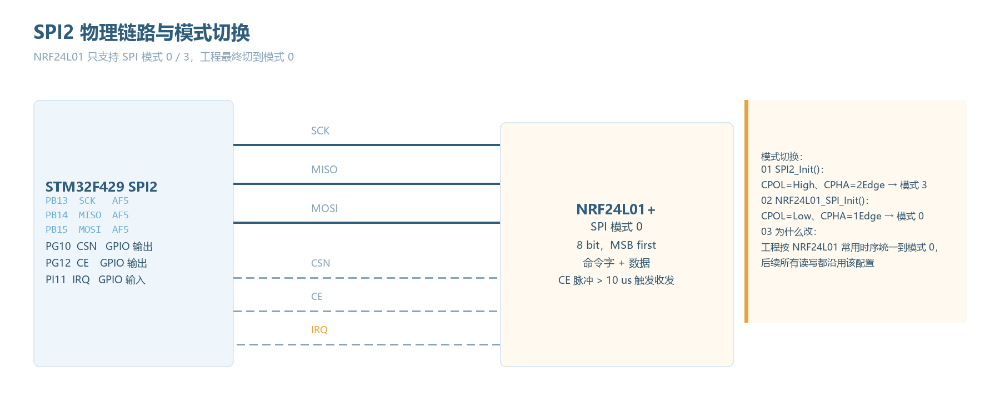
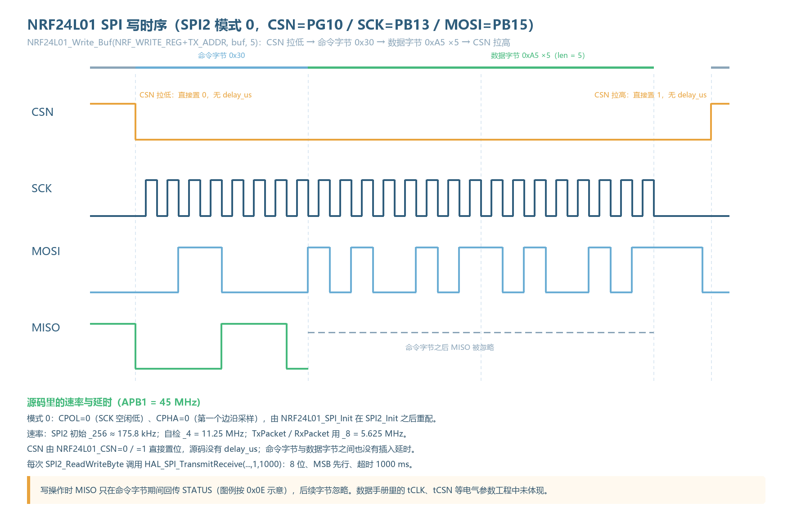
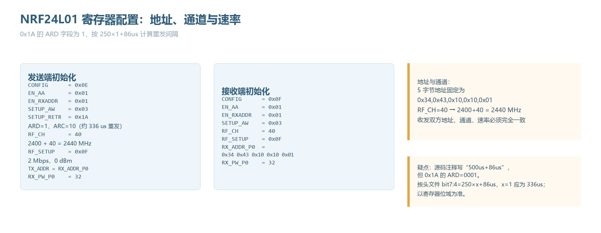
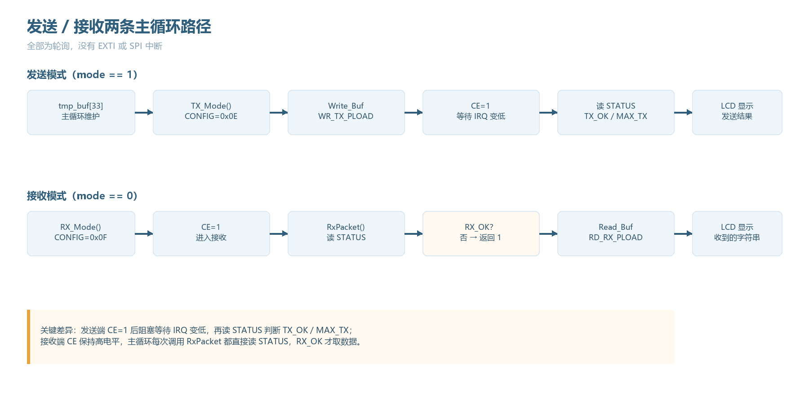

01 实验目标与硬件资源
本实验把 STM32F429 的 SPI2 接到一块 NRF24L01 模块上，先做寄存器回读自检，再由按键选择接收或发送角色。发送侧每 1.5 秒发一包 32 字节数据，接收侧把收到的内容直接显示到 LCD。整条链路没有使用 SPI 中断或 NRF 的 IRQ 中断，全部是主循环里的阻塞式轮询。
| 资源 | 工程中的落点 | 作用 |
|---|---|---|
| MCU | STM32F429IGT6，SYSCLK 180 MHz | 驱动 SPI 与显示 |
| 无线模块 | NRF24L01，2.4 GHz，2 Mbps，0 dBm | 点对点收发 32 字节负载 |
| SPI | SPI2：PB13=SCK、PB14=MISO、PB15=MOSI，AF5 | 寄存器与 FIFO 读写 |
| 控制引脚 | PG10=CSN、PG12=CE、PI11=IRQ | 片选、使能、中断状态输入 |
| 显示 | SDRAM + LCD | 模式提示、收发数据 |
| 串口 | USART1，PA9/PA10，115200 bps | 调试输出（本实验未主动上报） |
| 按键 / LED | KEY0 选 RX，KEY1 选 TX，LED0 心跳 | 角色选择与状态指示 |
02 目录与文件分工
| 目录 / 文件 | 关键函数 | 在本实验中的职责 |
|---|---|---|
USER/main.c | main() | 初始化、自检、按键选模式、TX/RX 两个死循环 |
USER/stm32f4xx_it.c | SysTick_Handler() | 只做 HAL_IncTick() |
CORE/startup_stm32f429xx.s | Reset_Handler | 栈堆、向量表、跳 SystemInit / __main |
USER/system_stm32f4xx.c | SystemInit() | 开 FPU、设置 VTOR |
SYSTEM/sys/sys.c | Stm32_Clock_Init() | HSE 25 MHz → PLL → 180 MHz |
SYSTEM/delay/delay.c | delay_init/us/ms | SysTick 轮询延时 |
SYSTEM/usart/usart.c | uart_init、fputc | 115200 bps，printf 重定向 |
HARDWARE/SPI/spi.c | SPI2_Init、SPI2_SetSpeed、SPI2_ReadWriteByte | SPI2 主机模式与速率切换 |
HARDWARE/NRF24L01/24l01.c | NRF24L01_Init/Check/TxPacket/RxPacket | 寄存器配置与收发时序 |
HARDWARE/SDRAM、LCD、LED、KEY | 各自 *_Init() | 帧缓存、显示、心跳、按键 |
main.c → spi.c → 24l01.c → sys.c → delay.c。先看清 main 里两个死循环的分工，再回头看寄存器，能避免把 TX 与 RX 的配置混在一起。03 启动流程总览

NRF24L01_Init() 放在 LCD_Init() 之后，因为自检失败时要用 LCD 打出 “NRF24L01 Error”。这一步的顺序不是随意的：SPI2 的引脚与速率依赖 45 MHz 的 PCLK1，而 PCLK1 又依赖前面的 PLL 配置。
int main(void)
{
u8 key,mode;
u16 t=0;
u8 tmp_buf[33]; // 32 字节负载 + 字符串结束符
HAL_Init(); // Cache、NVIC 分组、1 ms SysTick
Stm32_Clock_Init(360,25,2,8); // 180 MHz
delay_init(180); // 延时按 180 MHz 校准
uart_init(115200); // USART1
LED_Init();
KEY_Init();
SDRAM_Init();
LCD_Init();
NRF24L01_Init(); // GPIO + SPI2 + NRF 专属 SPI 模式
POINT_COLOR=RED;
LCD_ShowString(30,50,200,16,16,"Apollo STM32F4/F7");
LCD_ShowString(30,70,200,16,16,"NRF24L01 TEST");
while(NRF24L01_Check()) // 写 0xA5 回读，失败就重试
{
LCD_ShowString(30,130,200,16,16,"NRF24L01 Error");
delay_ms(200);
LCD_Fill(30,130,239,130+16,WHITE);
delay_ms(200);
}
LCD_ShowString(30,130,200,16,16,"NRF24L01 OK");
...
}
Stm32_Clock_Init必须在SPI2_Init之前：SPI2 挂在 APB1，分频基准是 45 MHz。delay_init(180)必须在NRF24L01_Init之前：CE 脉冲与重试都依赖微秒延时。- 自检失败时程序停在
while(NRF24L01_Check())里反复清屏重试，不会进入模式选择。 - 只有自检通过，才会显示 “NRF24L01 OK” 并进入按键等待循环。
04 启动文件与向量表
启动文件 CORE/startup_stm32f429xx.s 里的栈堆大小与向量表位置，直接决定 main 能用的栈空间。本实验的 tmp_buf[33] 与 LCD 字符串都在栈上，余量同样只有 1 KB。
Stack_Size EQU 0x00000400 // 栈 1 KB AREA STACK, NOINIT, READWRITE, ALIGN=3 Stack_Mem SPACE Stack_Size __initial_sp Heap_Size EQU 0x00000200 // 堆 512 B AREA RESET, DATA, READONLY EXPORT __Vectors __Vectors DCD __initial_sp // 第 0 项：初始 MSP DCD Reset_Handler // 第 1 项：复位入口 DCD NMI_Handler DCD HardFault_Handler ...
Reset_Handler PROC
EXPORT Reset_Handler [WEAK]
IMPORT SystemInit
IMPORT __main
LDR R0, =SystemInit
BLX R0 // 先跑 SystemInit
LDR R0, =__main
BX R0 // 再交给 C 库启动代码
ENDP
- 栈只有 1 KB：
tmp_buf[33]、LCD 格式化缓冲与 HAL 调用叠加时，要留意余量。 __main负责 .data 搬移与 .bss 清零，不能把它当成main。- 向量表第 0 项是 MSP 初值，第 1 项是复位入口；这两项由链接脚本与启动文件共同决定。
- 只要程序从 0x08000000 链接，
SystemInit就会把 VTOR 指回 Flash 起始地址。
05 SystemInit 与 HAL_Init
SystemInit() 不做 PLL，只负责打开 FPU 与设置向量表。HAL_Init() 打开 I-Cache / D-Cache / Prefetch，把 NVIC 分成 2 位抢占 + 2 位子优先级，并配置 1 ms SysTick。
void SystemInit(void)
{
RCC->CR |= (uint32_t)0x00000001; // 打开 HSI
RCC->CFGR = 0x00000000;
RCC->CR &= ~(uint32_t)0x01000000; // 关闭 PLL
SCB->CPACR |= ((3UL << 10*2) | (3UL << 11*2)); // CP10/CP11 全访问，开 FPU
#ifdef VECT_TAB_SRAM
SCB->VTOR = SRAM_BASE | VECT_TAB_OFFSET;
#else
SCB->VTOR = FLASH_BASE | VECT_TAB_OFFSET; // 默认 0x08000000
#endif
}
HAL_StatusTypeDef HAL_Init(void)
{
__HAL_FLASH_INSTRUCTION_CACHE_ENABLE(); // I-Cache
__HAL_FLASH_DATA_CACHE_ENABLE(); // D-Cache
__HAL_FLASH_PREFETCH_BUFFER_ENABLE(); // Prefetch
HAL_NVIC_SetPriorityGrouping(NVIC_PRIORITYGROUP_2);
HAL_InitTick(TICK_INT_PRIORITY); // TICK_INT_PRIORITY = 0x0F
return HAL_OK;
}
- 本工程几乎没有浮点运算，但 FPU 仍要打开；HAL 内部的部分计算会用到浮点。
- Cache 打开后，DMA 与外设访问内存需要注意一致性；本实验没有 DMA，不受影响。
HAL_InitTick()先按复位默认 16 MHz 配一次，随后HAL_RCC_ClockConfig再按 180 MHz 重装。- NVIC 分组 2 决定了后面 USART1 中断的抢占/子优先级解释方式。
06 时钟、延时与串口

void Stm32_Clock_Init(u32 plln,u32 pllm,u32 pllp,u32 pllq)
{
HAL_Init();
RCC_OscInitStruct.OscillatorType = RCC_OSCILLATORTYPE_HSE;
RCC_OscInitStruct.HSEState = RCC_HSE_ON; // 25 MHz 外部晶振
RCC_OscInitStruct.PLL.PLLState = RCC_PLL_ON;
RCC_OscInitStruct.PLL.PLLSource = RCC_PLLSOURCE_HSE;
RCC_OscInitStruct.PLL.PLLM = pllm; // 25
RCC_OscInitStruct.PLL.PLLN = plln; // 360
RCC_OscInitStruct.PLL.PLLP = pllp; // 2
RCC_OscInitStruct.PLL.PLLQ = pllq; // 8
HAL_RCC_OscConfig(&RCC_OscInitStruct);
RCC_ClkInitStruct.SYSCLKSource = RCC_SYSCLKSOURCE_PLLCLK;
RCC_ClkInitStruct.AHBCLKDivider = RCC_SYSCLK_DIV1; // HCLK 180 MHz
RCC_ClkInitStruct.APB1CLKDivider = RCC_HCLK_DIV4; // PCLK1 45 MHz
RCC_ClkInitStruct.APB2CLKDivider = RCC_HCLK_DIV2; // PCLK2 90 MHz
HAL_RCC_ClockConfig(&RCC_ClkInitStruct, FLASH_LATENCY_5);
}
| 量 | 算式 | 结果 |
|---|---|---|
| VCO 输入 | HSE / PLLM = 25 / 25 | 1 MHz |
| VCO 输出 | 1 MHz × PLLN = 1 × 360 | 360 MHz |
| SYSCLK | 360 / PLLP = 360 / 2 | 180 MHz |
| PCLK1 | 180 / 4 | 45 MHz（SPI2 基准） |
| PCLK2 | 180 / 2 | 90 MHz（USART1 基准） |
| USB 时钟 | 360 / PLLQ = 360 / 8 | 45 MHz |
延时来自 SYSTEM/delay/delay.c，delay_init(180) 把 fac_us 设为 180；delay_us 直接读 SysTick->VAL 累计周期，不产生中断。串口是 115200 8N1，printf 通过重写 fputc 落到 USART1。
void delay_init(u8 SYSCLK)
{
HAL_SYSTICK_CLKSourceConfig(SYSTICK_CLKSOURCE_HCLK);
fac_us = SYSCLK; // 180 MHz → 1 us 需要 180 个周期
}
int fputc(int ch, FILE *f)
{
while((USART1->SR & 0X40) == 0); // 等 TC 置位
USART1->DR = (u8)ch;
return ch;
}
- SPI2 在 APB1 上，分频基准是 45 MHz，不是 90 MHz；算错就会把速率估高。
- 180 MHz 需要 5 个 Flash 等待周期，由
FLASH_LATENCY_5指定。 delay_us不依赖中断，可在临界区使用；但它假设 SysTick 一直在运行。- 115200 对 90 MHz 的 PCLK2 分频误差很小，长时间打印也不会明显漂移。
07 SPI2 初始化与引脚复用

SPI2_Init() 先把 SPI2 配成主机、双线全双工、8 位、MSB 先行，时钟极性高、第二边沿采样（即模式 3），预分频 256。随后 HAL_SPI_MspInit() 打开 GPIOB 与 SPI2 时钟，把 PB13/14/15 复用为 AF5。
void SPI2_Init(void)
{
SPI2_Handler.Instance=SPI2;
SPI2_Handler.Init.Mode=SPI_MODE_MASTER; // 主机
SPI2_Handler.Init.Direction=SPI_DIRECTION_2LINES;// 全双工
SPI2_Handler.Init.DataSize=SPI_DATASIZE_8BIT; // 8 位帧
SPI2_Handler.Init.CLKPolarity=SPI_POLARITY_HIGH; // CPOL = 1
SPI2_Handler.Init.CLKPhase=SPI_PHASE_2EDGE; // CPHA = 1 → 模式 3
SPI2_Handler.Init.NSS=SPI_NSS_SOFT; // 软件片选
SPI2_Handler.Init.BaudRatePrescaler=SPI_BAUDRATEPRESCALER_256; // 45/256
SPI2_Handler.Init.FirstBit=SPI_FIRSTBIT_MSB;
SPI2_Handler.Init.TIMode=SPI_TIMODE_DISABLE;
SPI2_Handler.Init.CRCCalculation=SPI_CRCCALCULATION_DISABLE;
HAL_SPI_Init(&SPI2_Handler);
__HAL_SPI_ENABLE(&SPI2_Handler);
SPI2_ReadWriteByte(0Xff); // 读一次清空
}
void HAL_SPI_MspInit(SPI_HandleTypeDef *hspi)
{
GPIO_InitTypeDef GPIO_Initure;
__HAL_RCC_GPIOF_CLK_ENABLE();
__HAL_RCC_SPI5_CLK_ENABLE();
__HAL_RCC_SPI2_CLK_ENABLE();
GPIO_Initure.Pin=GPIO_PIN_7|GPIO_PIN_8|GPIO_PIN_9;
GPIO_Initure.Mode=GPIO_MODE_AF_PP;
GPIO_Initure.Alternate=GPIO_AF5_SPI5;
HAL_GPIO_Init(GPIOF,&GPIO_Initure);
GPIO_Initure.Pin=GPIO_PIN_13|GPIO_PIN_14|GPIO_PIN_15;
GPIO_Initure.Alternate=GPIO_AF5_SPI2; // PB13/14/15
HAL_GPIO_Init(GPIOB,&GPIO_Initure);
}
SPI_NSS_SOFT表示片选不由硬件 NSS 引脚产生，而由代码手动拉CSN。- 256 分频下 SPI2 只有 45/256 ≈ 175.8 kHz，是刻意放慢的“安全初速”，自检后再提速。
- PB13/14/15 必须设为复用推挽 AF5，否则 SPI 波形出不来。
HAL_SPI_MspInit由HAL_SPI_Init回调，不要在SPI2_Init里重复配引脚。
08 NRF24L01 初始化与 SPI 模式改造
NRF24L01_Init() 先配置控制引脚，再调用 SPI2_Init()，紧接着用 NRF24L01_SPI_Init() 把 SPI2 改成模式 0。这是本实验最容易被忽略的一步：通用 SPI 初始化给的是模式 3，而 NRF24L01 的时序要求 CPOL=0、CPHA=0。
void NRF24L01_Init(void)
{
GPIO_InitTypeDef GPIO_Initure;
__HAL_RCC_GPIOG_CLK_ENABLE();
__HAL_RCC_GPIOI_CLK_ENABLE();
GPIO_Initure.Pin=GPIO_PIN_10|GPIO_PIN_12; // PG10=CSN, PG12=CE
GPIO_Initure.Mode=GPIO_MODE_OUTPUT_PP; // 推挽输出
GPIO_Initure.Pull=GPIO_PULLUP;
GPIO_Initure.Speed=GPIO_SPEED_HIGH;
HAL_GPIO_Init(GPIOG,&GPIO_Initure);
GPIO_Initure.Pin=GPIO_PIN_11; // PI11=IRQ
GPIO_Initure.Mode=GPIO_MODE_INPUT; // 输入
HAL_GPIO_Init(GPIOI,&GPIO_Initure);
SPI2_Init(); // 通用 SPI2 初始化
NRF24L01_SPI_Init(); // 改成 NRF 需要的模式 0
NRF24L01_CE=0; // 先退出收发
NRF24L01_CSN=1; // 片选释放
}
void NRF24L01_SPI_Init(void)
{
__HAL_SPI_DISABLE(&SPI2_Handler); // 改配置前必须先关闭 SPI
SPI2_Handler.Init.CLKPolarity=SPI_POLARITY_LOW; // CPOL = 0
SPI2_Handler.Init.CLKPhase=SPI_PHASE_1EDGE; // CPHA = 0 → 模式 0
HAL_SPI_Init(&SPI2_Handler);
__HAL_SPI_ENABLE(&SPI2_Handler);
}
模式 0 落到总线上就是下面的波形：CSN 拉低后，SCK 空闲为低，命令字节在上升沿被 NRF24L01 采样，数据字节紧跟其后；写操作时 MISO 只在第一个字节回传 STATUS。

CSN 的拉低/拉高都是直接写 GPIO，源码没有插入 delay_us；速率由 SPI2 的分频决定，自检 11.25 MHz、收发 5.625 MHz，均来自 45 MHz 的 APB1。
- SPI 模式改配必须“先关后开”，否则
HAL_SPI_Init里写 CR1 会被硬件忽略。 - 模式 0 与模式 3 的差别在空闲电平与采样边沿；接错不会立刻报错，但读回的寄存器值会错位。
CE=0、CSN=1是上电默认态：不发射、不选中。- PI11 只作为输入轮询，没有配置 EXTI，因此 IRQ 不会触发中断。
09 器件自检与寄存器配置

NRF24L01_Check() 往 TX_ADDR 写 5 个 0xA5 再读回，全对才返回 0。它不是读器件 ID，而是验证“SPI 写进去能原样读出来”，因此能同时发现片选、模式、供电问题。
u8 NRF24L01_Check(void)
{
u8 buf[5]={0XA5,0XA5,0XA5,0XA5,0XA5};
u8 i;
SPI2_SetSpeed(SPI_BAUDRATEPRESCALER_4); // 45/4 = 11.25 MHz
NRF24L01_Write_Buf(NRF_WRITE_REG+TX_ADDR,buf,5); // 写地址寄存器
NRF24L01_Read_Buf(TX_ADDR,buf,5); // 原样读回
for(i=0;i<5;i++)if(buf[i]!=0XA5)break;
if(i!=5)return 1; // 读回不一致 → 失败
return 0;
}
| 寄存器 | 写入值 | 含义 |
|---|---|---|
EN_AA | 0x01 | 通道 0 自动应答 |
EN_RXADDR | 0x01 | 只启用通道 0 接收地址 |
SETUP_AW | 0x03 | 地址宽度 5 字节 |
SETUP_RETR | 0x1A | 自动重发，间隔 250 us × 1 + 86 us，重发 10 次 |
RF_CH | 40 | 2400 + 40 = 2440 MHz |
RF_SETUP | 0x0F | 2 Mbps，0 dBm，低噪声增益开 |
RX_PW_P0 | 32 | 通道 0 有效负载 32 字节 |
CONFIG | RX 0x0F / TX 0x0E | PWR_UP + CRC16 + 对应收发模式 |
void NRF24L01_TX_Mode(void)
{
NRF24L01_CE=0;
NRF24L01_Write_Buf(NRF_WRITE_REG+TX_ADDR,(u8*)TX_ADDRESS,5);
NRF24L01_Write_Buf(NRF_WRITE_REG+RX_ADDR_P0,(u8*)RX_ADDRESS,5); // ACK 用
NRF24L01_Write_Reg(NRF_WRITE_REG+EN_AA,0x01);
NRF24L01_Write_Reg(NRF_WRITE_REG+EN_RXADDR,0x01);
NRF24L01_Write_Reg(NRF_WRITE_REG+SETUP_RETR,0x1a);
NRF24L01_Write_Reg(NRF_WRITE_REG+RF_CH,40); // 2440 MHz
NRF24L01_Write_Reg(NRF_WRITE_REG+RF_SETUP,0x0f); // 2 Mbps / 0 dBm
NRF24L01_Write_Reg(NRF_WRITE_REG+CONFIG,0x0e); // 发送模式
NRF24L01_CE=1; // 拉高后保持 > 10 us 启动发送
}
- 自检把 SPI 提到 11.25 MHz，已略高于 NRF24L01 标称的 10 MHz SPI 上限，工程注释也承认“超一点没关系”。
- 地址
0x34 0x43 0x10 0x10 0x01收发两端必须完全一致，否则永远收不到。 SETUP_RETR=0x1A中 ARD=1，按数据手册是 250 us × 1 + 86 us = 336 us；源码注释写作 “500us + 86us”，以寄存器定义为准。- TX 模式也写
RX_ADDR_P0，因为自动应答的 ACK 要按这个地址回传。
10 发送与接收数据链

NRF24L01_TxPacket() 先把速率降到 5.625 MHz，写入 32 字节负载，再给 CE 一个高电平脉冲，然后死等 IRQ 变低。IRQ 拉低说明有事件发生，接着读 STATUS 判断是发送成功还是达到最大重发次数。
u8 NRF24L01_TxPacket(u8 *txbuf)
{
u8 sta;
SPI2_SetSpeed(SPI_BAUDRATEPRESCALER_8); // 45/8 = 5.625 MHz
NRF24L01_CE=0;
NRF24L01_Write_Buf(WR_TX_PLOAD,txbuf,TX_PLOAD_WIDTH); // 写 32 字节 TX FIFO
NRF24L01_CE=1; // 触发发送
while(NRF24L01_IRQ!=0); // 阻塞等待事件
sta=NRF24L01_Read_Reg(STATUS);
NRF24L01_Write_Reg(NRF_WRITE_REG+STATUS,sta); // 清标志
if(sta&MAX_TX) // 重发次数用尽
{
NRF24L01_Write_Reg(FLUSH_TX,0xff);
return MAX_TX;
}
if(sta&TX_OK) return TX_OK; // 发送成功
return 0xff;
}
u8 NRF24L01_RxPacket(u8 *rxbuf)
{
u8 sta;
SPI2_SetSpeed(SPI_BAUDRATEPRESCALER_8);
sta=NRF24L01_Read_Reg(STATUS);
NRF24L01_Write_Reg(NRF_WRITE_REG+STATUS,sta); // 先清标志
if(sta&RX_OK) // 收到数据
{
NRF24L01_Read_Buf(RD_RX_PLOAD,rxbuf,RX_PLOAD_WIDTH);
NRF24L01_Write_Reg(FLUSH_RX,0xff); // 清 RX FIFO
return 0;
}
return 1; // 无数据
}
- TX 速率再降一档到 5.625 MHz；源码注释写 6.75 MHz，是按 54 MHz 算的，实际 APB1 是 45 MHz。
while(NRF24L01_IRQ!=0)是阻塞等待，没有超时保护；模块异常时主循环会停在这里。- STATUS 寄存器“写 1 清零”，因此读出来后要把原值写回，才能清掉 TX_DS / MAX_RT / RX_DR。
- 接收失败返回 1 不是错误，只表示这一轮没有新包，main 会
delay_us(100)后再查。
11 中断链路与时基
| 触发源 | NVIC / 入口 | 处理内容 |
|---|---|---|
| SysTick 1 ms | SysTick_Handler → HAL_IncTick() | uwTick 自增 |
| USART1 RXNE | USART1_IRQHandler | 写入 USART_RX_BUF |
| NRF24L01 IRQ | 工程中未体现 | PI11 轮询，while(NRF24L01_IRQ!=0) |
| TIM4 | 工程中未体现 | 本实验未启用 USMART，TIM4 不初始化 |
void SysTick_Handler(void)
{
HAL_IncTick(); // 只累加 1 ms 计数
}
void USART1_IRQHandler(void)
{
u8 Res;
if((__HAL_UART_GET_FLAG(&UART1_Handler,UART_FLAG_RXNE)!=RESET) &&
(__HAL_UART_GET_IT_SOURCE(&UART1_Handler,UART_IT_RXNE)!=RESET))
{
HAL_UART_Receive(&UART1_Handler,&Res,1,1000);
if(USART_RX_STA < 0x8000)
{
USART_RX_BUF[USART_RX_STA & 0X3FFF] = Res;
USART_RX_STA++;
if(Res == '\r') USART_RX_STA |= 0x8000;
}
}
}
- NRF 的 IRQ 引脚没有映射到 EXTI，所以“中断”在这里只是电平状态，靠主循环读。
- 阻塞等 IRQ 期间，SysTick 仍在计数，但主循环无法做别的事。
- USART1 中断只负责收字节，本实验没有解析命令。
- 没有 TIM4，因此 USMART 的动态函数调用机制在本实验不可用。
12 主循环与现象
while(1)
{
key=KEY_Scan(0);
if(key==KEY0_PRES) { mode=0; break; } // RX
else if(key==KEY1_PRES) { mode=1; break; } // TX
t++;
if(t==100)LCD_ShowString(10,150,230,16,16,"KEY0:RX_Mode KEY1:TX_Mode");
if(t==200) { LCD_Fill(10,150,230,150+16,WHITE); t=0; }
delay_ms(5);
}
if(mode==0) // 接收分支
{
NRF24L01_RX_Mode();
while(1)
{
if(NRF24L01_RxPacket(tmp_buf)==0)
{
tmp_buf[32]=0;
LCD_ShowString(0,190,lcddev.width-1,32,16,tmp_buf);
}else delay_us(100);
t++;
if(t==10000) { t=0; LED0=!LED0; }
}
}
else // 发送分支
{
NRF24L01_TX_Mode();
mode=' ';
while(1)
{
if(NRF24L01_TxPacket(tmp_buf)==TX_OK)
{
LCD_ShowString(30,170,239,32,16,"Sended DATA:");
LCD_ShowString(0,190,lcddev.width-1,32,16,tmp_buf);
key=mode;
for(t=0;t<32;t++) { key++; if(key>('~'))key=' '; tmp_buf[t]=key; }
mode++;
if(mode>'~')mode=' ';
tmp_buf[32]=0;
}
else
{
LCD_Fill(0,170,lcddev.width,170+16*3,WHITE);
LCD_ShowString(30,170,lcddev.width-1,32,16,"Send Failed ");
}
LED0=!LED0;
delay_ms(1500);
}
}
| 操作 | 可观察现象 | 对应代码 |
|---|---|---|
| 上电 | LCD 显示 “NRF24L01 OK”，随后提示按键选择 | NRF24L01_Check() 返回 0 |
| 模块未接好 | 反复显示 “NRF24L01 Error”，无法继续 | while(NRF24L01_Check()) |
| 按 KEY0 | 进入 RX 模式，等待对端数据 | NRF24L01_RX_Mode() |
| 按 KEY1 | 进入 TX 模式，每 1.5 s 发一包并刷新字符 | NRF24L01_TxPacket() |
| 对端未上电 | 显示 “Send Failed”，LED0 同步翻转 | MAX_TX 分支 |
- 模式选择循环里的
t只用于闪烁提示，按到键就break，不会再回到这里。 - RX 分支每次失败只等 100 us，轮询很密；TX 分支每包间隔 1.5 s，节奏由
delay_ms(1500)决定。 - TX 首次发送时
tmp_buf还没有被赋值，屏幕上会出现未初始化内容；这是源码本身的行为。 - 发送内容每次整体右移一个字符，
mode递增；超过'~'后回到空格，形成滚动效果。
13 关键逻辑复盘
- 时钟链：
SystemInit只开 FPU 与 VTOR；PLL 在Stm32_Clock_Init里配置。HSE 25 MHz → 1 MHz → 360 MHz → 180 MHz，Flash 5 WS。 - 总线链：SPI2 在 APB1，基准 45 MHz；初速 256 分频，自检 4 分频，收发 8 分频。
- 模式链：
SPI2_Init给的是模式 3，NRF24L01_SPI_Init改成模式 0；顺序不能颠倒。 - 引脚链：PB13/14/15 复用 AF5，PG10 片选、PG12 使能、PI11 状态输入，全部由 GPIO 初始化决定。
- 配置链：地址、信道 40、2 Mbps、0 dBm、32 字节负载、CRC16，收发两端必须一致。
- 数据链：TX FIFO → CE 脉冲 → 空中 → RX FIFO → STATUS 判断 → LCD 字符串。
14 总结与排查
| 现象 | 优先检查 | 依据 |
|---|---|---|
| LCD 全黑 | SDRAM 是否初始化、面板分支是否走对 | SDRAM_Init → LCD_Init |
| 一直显示 Error | 3.3 V 供电、CSN/CE 电平、SPI 是否模式 0 | NRF24L01_Check、NRF24L01_SPI_Init |
| 自检偶尔通过 | SPI 速率过高、杜邦线过长 | SPI2_SetSpeed(SPI_BAUDRATEPRESCALER_4) |
| 一直 Send Failed | 对端未上电、地址/信道/速率不一致 | TX_ADDRESS、RF_CH=40、RF_SETUP=0x0F |
| 收到乱码 | 负载宽度不是 32、字符串未补结束符 | RX_PW_P0=32、tmp_buf[32]=0 |
| 主循环卡死 | while(NRF24L01_IRQ!=0) 没有超时 | NRF24L01_TxPacket |
本实验的启动过程可以压缩成一句话：复位后先建立 180 MHz 时钟与 45 MHz 的 APB1，再把 SPI2 从通用模式 3 改成 NRF 需要的模式 0，写完地址与射频参数后由按键选择收发角色，最后在各自死循环里用 CE 脉冲和 STATUS 轮询完成 32 字节收发。